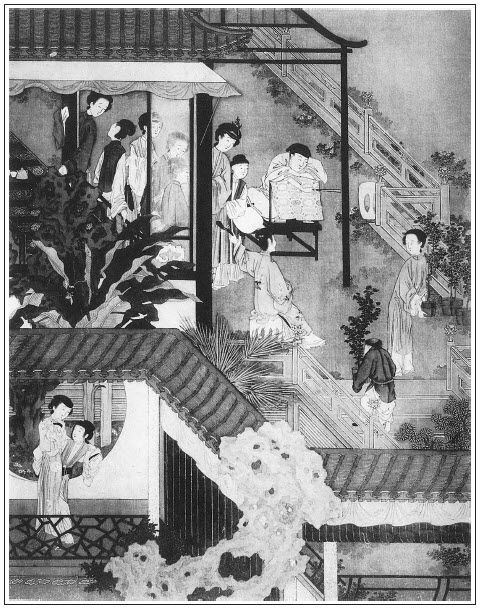

張回此回小小一篇文字，見色慾有悲傷之時，錢財無止足之處，為世人涕淚相告也。
瓶兒之病，因官哥，本因子虛。乃官哥未死，子虛不來，是官哥即子虛；官哥既死，子虛頻來，是子虛即官哥。而必寫官哥在子虛懷中者，正子虛所以纏瓶兒之處，而瓶兒纏孽之因也。或人必執官哥在子虛懷中，疑為子虛乎？彼烏知著相受迷之故，而自己先著相受迷也。
官作生涯，見西門一片市井，全不改悔也。又為臨死算本之時，預開帳簿也。
此回文字開手將題面兩事輕輕敘完。下文接以一酒令，總結金、瓶、梅三人，並玉樓，並愛姐、月娘，已為後文一番結束。上映吳神仙以及卜龜等文字也。且更以二《清江引》為月兒作襯。而第一個又為金蓮、敬濟一引，「趕他去別處飛」，又為春梅地也。故此回是過節，文中卻插入關鎖，文字神妙之至。
詞曰：
倦睡懨懨生怕起，如癡如醉如慵，半垂半卷舊簾櫳。眼穿芳草綠，淚襯落花紅。
追憶當年魂夢斷，為雲為雨為風。淒淒樓上數歸鴻。悲淚三兩陣，哀緒萬千重。張夾詞亦淒惻動人。
──右調《臨江仙》

話說潘金蓮見孩子沒了，每日抖擻精神，百般稱快，指著丫頭罵道：「賊淫婦！我只說你日頭常響午，卻怎的今日也有錯了的時節？你『斑鳩跌了蛋──也嘴答谷了』。『春凳折了靠背兒──沒的椅了』。『王婆子賣了磨──推不的了』。『老鴇子死了粉頭──沒指望了』。卻怎的也和我一般！」繡眉官哥既死，怨妒俱可相忘，而猶喋喋不已，何哉？豈花子虛附之而逼其命耶！李瓶兒這邊屋裡分明聽見，不敢聲言，背地裡只是掉淚。著了這暗氣暗惱，又加之煩惱憂戚，漸漸精神恍亂，夢魂顛倒，每日茶飯都減少了。自從葬了官哥兒第二日，吳銀兒就家去了。老馮領了個十三歲的丫頭來，五兩銀子賣與孫雪娥房中使喚，改名翠兒，不在話下。
這李瓶兒一者思念孩兒，二者著了重氣，把舊病又發起來，照舊下邊經水淋漓不止。西門慶請任醫官來看，討將藥來吃下去，如水澆石一般，越吃越旺。那消半月之間，漸漸容顏頓減，肌膚消瘦，而精彩丰標無復昔時之態矣。
正是：
肌骨大都無一把，如何禁架許多愁！
一日，九月初旬，天氣淒涼，金風漸漸。李瓶兒夜間獨宿房中，銀床枕冷，紗窗月浸，張夾淒惻之極。不覺思想孩兒，唏噓長歎，恍恍然恰似有人彈的窗欞響。李瓶兒呼喚丫鬢，都睡熟了不答，乃自下床來，倒靸弓鞋，翻披繡襖，開了房門。出戶視之，彷彿見花子虛抱著官哥兒叫他，新尋了房兒，同去居住。張旁孽根分明，一絲不錯。李瓶兒還捨不的西門慶，不肯去，雙手就抱那孩兒，被花子虛只一推，跌倒在地。撒手驚覺，卻是南柯一夢。嚇了一身冷汗，嗚嗚咽咽，只哭到天明。繡眉明知為子虛之報，而猶憐惜，不忍讀甚矣，情色之奪理也。
正是：
有情豈不等，著相自家迷。張夾辰鍾棒喝。
有詩為證：
纖纖新月照銀屏，人在幽閨欲斷魂。
益悔風流多不足，須知恩愛是愁根。
那時，來保南京貨船又到了，使了後生王顯上來取車稅銀兩。西門慶這裡寫書，差榮海拿一百兩銀子，又具羊酒金緞禮物謝主事：「就說此貨過稅，還望青目一二。」家中收拾鋪面完備，又擇九月初四日開張，就是那日卸貨，連行李共裝二十大車。那日，親朋遞果盒掛紅者約有三十多人，夏提刑也差人送禮花紅來。喬大戶叫了十二名吹打的樂工、雜耍撮弄。西門慶這裡，李銘、吳惠、鄭春三個小優兒彈唱。甘夥計與韓夥計都在櫃上發賣，一個看銀子，一個講說價錢，崔本專管收生活。西門慶穿大紅，冠帶著，燒罷紙，繡眉市井氣，可笑。張夾西門官從此處來，固應冠帶燒紙。各親友遞果盒把盞畢，後邊廳上安放十五張桌席，五果五菜、三湯五割，從新遞酒上坐，鼓樂喧天。在坐者有喬大戶、吳大舅、吳二舅、花大舅、沈姨夫、韓姨夫、吳道官、倪秀才、溫葵軒、應伯爵、謝希大、常峙節，還有李智、黃四、傅自新等眾夥計主管並街坊鄰舍，都坐滿了席面。三個小優兒在席前唱了一套《南呂·紅衲襖》「混元初生太極」。繡眉此題蓋指富貴功名，俱從財出。張夾這錢字一描。須臾，酒過五巡，食割三道，下邊樂工吹打彈唱，雜耍百戲過去，席上觥籌交錯。應伯爵、謝希大飛起大鐘來，杯來盞去。
飲至日落時分，把眾人打發散了，西門慶只留下吳大舅、沈姨夫、韓姨夫、溫葵軒、應伯爵、謝希大，從新擺上桌席留後坐。那日新開張，夥計攢帳，就賣了五百餘兩銀子。西門慶滿心歡喜，晚夕收了鋪面，把甘夥計、韓夥計、傅夥計、崔本、賁四連陳敬濟都邀來，到席上飲酒。吹打良久，把吹打樂工也打發去了，止留下三個小優兒在席前唱。應伯爵吃的已醉上來，走出前邊解手，叫過李銘問道：「那個扎包髻兒清俊的小優兒，是誰家的？」李銘道：「二爹原來不知道？」因說道：「他是鄭奉的兄弟鄭春。前日爹在他家吃酒，請了他姐姐愛月兒了。」伯爵道：「真個？怪道前日上紙送殯都有他。」於是歸到酒席上，向西門慶道：「哥，你又恭喜，又抬了小舅子了。」張夾忙中有描，信然，信然。西門慶笑道：「怪狗才，休要胡說。」一面叫過王經來：「斟與你應二爹一大杯酒。」伯爵向吳大舅說道：「老舅，你怎麼說？這鍾罰的我沒名。」西門慶道：「我罰你這狗才一個出位妄言。」伯爵低頭想了想兒，呵呵笑了，道：「不打緊處，等我吃，我吃死不了人。」又道：「我從來吃不得啞酒，你叫鄭春上來唱個兒我聽，我才罷了。」張夾一絲不放空。當下，三個小優一齊上來彈唱。伯爵令李銘、吳惠下去：「不要你兩個。我只要鄭春單彈著箏兒，只唱個小小曲兒我下酒罷。」繡眉寫笑則有聲，寫想則有形，寫舉止語默則俱有心，何得文人刻畫至此。謝希大叫道：「鄭春你過來，依著你應二爹唱個罷。」西門慶道：「和花子講過：有一個曲兒吃一鍾酒。」叫玳安取了兩個大銀鍾放在應二面前。那鄭春款按銀箏，低低唱《清江引》道：繡眉即打起黃鶯兒之意。
一個姐兒十六七，見一對蝴蝶戲。香肩靠粉牆，春筍彈珠淚。喚梅香趕他去別處飛。張夾黃絹幼婦。
鄭春唱了請酒，伯爵才飲訖，玳安又連忙斟上。鄭春又唱：
轉過雕欄正見他，斜倚定荼䕷架；佯羞整鳳衩，不說昨宵話，笑吟吟掐將花片兒打。繡眉寫私會，幽冷之極。張夾千狐之腋。
伯爵吃過，連忙推與謝希大，說道：「罷，我是成不的，成不的！這兩大鐘把我就打發了。」謝希大道：「傻花子，你吃不得推與我來，我是你家有𣬼的蠻子？」伯爵道：「傻花子，我明日就做了堂上官兒，少不的是你替。」西門慶道：「你這狗才，到明日只好做個韶武。」伯爵笑道：「傻孩兒，我做了韶武，把堂上讓與你就是了。」西門慶笑令玳安兒：「拿磕瓜來打這賊花子！」謝希大悄悄向他頭上打了一個響瓜兒，說道：「你這花子，溫老先生在這裡，你口裡只恁胡說。」伯爵道：「溫老先兒他斯文人，不管這閒事。」溫秀才道：「二公與我這東君老先生，原來這等厚。酒席中間，誠然不如此也不樂。悅在心，樂主發散在外，自不覺手之舞之，足之蹈之如此。」繡眉滿堂醉人荒言穢語中，忽點出一段酸腐之談，錯織如錦。語云：嬉笑怒罵皆文章。閱此方知其言之妙。張夾腐得入化故妙。沈姨夫向西門慶說：「姨夫，不是這等。請大舅上席，還行個令兒──或擲骰，或猜枚，或看牌，不拘詩詞歌賦、頂真續麻、急口令，說不過來吃酒。這個庶幾均勻，彼此不亂。」西門慶道：「姨夫說的是。」先斟了一杯，與吳大舅起令。吳大舅拿起骰盆兒來說道：「列位，我行一令：順著數去，遇點要個花名，花名下要頂真，不拘詩詞歌賦說一句。說不來，罰一大杯。我就是一起──
一擲一點紅，紅梅花對白梅花。」張夾春梅。直貫弄一得雙之春梅。
吳大舅擲了個二，多一杯。飲過酒，該沈姨夫接擲。沈姨夫說道：
「二擲並頭蓮，蓮漪戲綵鴛。」張夾金蓮。直貫至不憤吹簫之金蓮，蓋得意殺也。
沈姨夫也擲了個二，飲過兩杯，就過盆與韓姨夫行令。韓姨夫說道：
「三擲三春李，李下不整冠。」張夾瓶兒。珠沉玉碎矣。
韓姨夫擲完，吃了酒，送與溫秀才。秀才道：「我學生奉令了──
四擲狀元紅，紅紫不以為褻服。」繡旁到底帶酸。張夾玉樓。玉兒自是尊貴。
溫秀才只遇了一杯酒，吃過，該應伯爵行令。伯爵道：「我在下一個字也不識，不會頂真，只說個急口令兒罷：
一個急急腳腳的老小，左手拿著一個黃豆巴斗，右手拿著一條綿花叉口，望前只管跑走。一個黃白花狗，咬著那綿花叉口，那急急腳腳的老小，放下那左手提的那黃豆巴斗，走向前去打那黃白花狗。不知手鬥過那狗，狗鬥過那手。」張夾忽用此作一間。
西門慶笑罵道：「你這賊謅斷腸子的天殺的，誰家一個手去逗狗來？一口不被那狗咬了？」伯爵道：「誰叫他不拿個棍兒來！我如今『抄化子不見了拐棒兒──受狗的氣了』。」繡旁又自露破膁，妙。謝希大道：「大官人，你看花子自家倒了架，說他是花子。」西門慶道：「該罰他一鐘，不成個令。謝子純，你行罷！」謝希大道：「我也說一個，比他更妙：
牆上一片破瓦，牆下一疋騾馬。落下破瓦，打著騾馬。不知是那破瓦打傷騾馬，不知是那騾馬踏碎了破瓦。」
伯爵道：「你笑話我的令不好，你這破瓦倒好？你家娘子兒劉大姐就是個騾馬，我就是個破瓦。──俺兩個破磨對瘸驢。」謝希大道：「你家那杜蠻婆老淫婦，撒把黑豆只好餵豬哄狗，也不要他。」張夾白嚼入肚，又一笑。兩個人鬥了回嘴，每人斟了一鐘，該韓夥計擲。韓道國道：「老爹在上，小人怎敢佔先？」西門慶道：「順著來，不要遜了。」於是韓道國說道：
「五擲臘梅花，花裡遇神仙。」張夾愛姐貞操俱見。
擲畢，該西門慶擲，西門慶道：「我要擲個六：
六擲滿天星，星辰冷落碧潭水。」張夾月娘。直貫入雲裡手之夢，又西門死期至矣。
果然擲出個六來。應伯爵看見，說道：「哥今年上冬，管情加官進祿，主有慶事。」繡眉歸到奉承上，方不失旨。張夾亦算反照。於是斟了一大杯酒與西門慶。一面李銘等三個上來彈唱，頑耍至更闌方散。西門慶打發小優兒出門，看收了傢伙，派定韓道國、甘夥計、崔本、來保四人輪流上宿，吩咐仔細門戶，張夾結轉生涯。就過那邊去了。一宿晚景不題。
次日，應伯爵領了李智、黃四來交銀子，說：「此遭只關了一千四百五六十兩銀子，不夠還人，只挪了三百五十兩銀子與老爹。等下遭關出來再找完，不敢遲了。」伯爵在旁又替他說了兩句美言。西門慶教陳敬濟來，把銀子兌收明白，打發去了。銀子還擺在桌上，西門慶因問伯爵道：「常二哥說他房子尋下了，前後四間，只要三十五兩銀子。他來對我說，正值小兒病重，我心裡亂，就打發他去了。不知他對你說來不曾？」伯爵道：「他對我說來，我說，你去的不是了，他乃郎不好，他自亂亂的，有甚麼心緒和你說話？你且休回那房主兒，等我見哥，替你題就是了。」西門慶道：「也罷，你吃了飯，拿一封五十兩銀子，今日是個好日子，替他把房子成了來罷。剩下的，叫常二哥門面開個小鋪兒，月間賺幾錢銀子兒，就夠他兩口兒盤攪了。」繡眉西門慶一段脫手相贈，全無吝色處，亦古今所難。伯爵道：「此是哥下顧他了。」不一時，放桌兒擺上飯來，西門慶陪他吃了飯，道：「我不留你。你拿了這銀子去，替他幹幹這勾當去罷。」伯爵道：「你這裡還教個大官和我去。」西門慶道：「沒的扯淡，你袖了去就是了。」張夾以上西門一段，雖是結「得鈔」一回之案，卻亦作者有意。言如西門等小人尚知揮金助友，況不願為西門者乎？真是調侃世人不少。伯爵道：「不是這等說，今日我還有小事。實和哥說，家表弟杜三哥生日，早晨我送了些禮兒去，他使小廝來請我後晌坐坐。我不得來回你話，教個大官兒跟了去，成了房子，好教他來回你話的。」西門慶道：「若是恁說，叫王經跟你去罷。」一面叫王經跟伯爵來到了常家。常峙節正在家，見伯爵至，讓進裡面坐。伯爵拿出銀子來與常峙節看，說：「大官人如此如此，教我同你今日成房子去，我又不得閒，杜三哥請我吃酒。我如今了畢你的事，我方才得去。」常峙節連忙叫渾家快看茶來，說道：「哥的盛情，誰肯！」一面喫茶畢，叫了房中人來，同到新市街，兌與賣主銀子，寫立房契。伯爵吩咐與王經，歸家回西門慶話。剩的銀子，叫與常峙節收了。他便與常峙節作別，往杜家吃酒去了。西門慶看了文契，還使王經送與常二收了，不在話下。正是：
求人需求大丈夫，濟人須濟急時無。
一切萬般皆下品，誰知恩德是良圖。
文回文禹門云：李瓶兒房中淒風苦雨，西門慶鋪內花天酒地。從來財與子不並行，豐於財者每嗇於嗣，所聞所見，大抵然也。否則父積於散，空貽牛馬之譏，豈真為富不仁一言，竟為陽虎窺破天心人事耶？然亦視理財者何如耳。果能救困扶危，肯堂肯勾者，正自有人也。
或謂西門慶之於財，亦頗慷慨，並非慳吝一流，亦當有小善可錄。予笑曰：是又以修廟，印經為行善者也。蔡狀元之百金，不足為義，其餘之揮霍，不過撒漫使錢耳。而況以銀行淫，以貨免禍，亦可以謂其疏財乎？悖入悖出之聖言，西門慶倖免於前，僅獲其報於死後，亦可謂狡猾之旌者哉！
按：此評寫於光緒五年（1879）八月初三日。